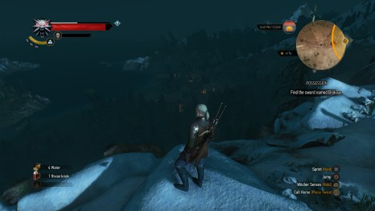

THE WITCHER 3
The Witcher 3: Wild Hunt a fost unul dintre cele mai așteptate jocuri ale acestui an, și acum, după o amânare serioasă, a venit momentul să vedem dacă cel mai nou Action RPG al celor de la CD Projekt Red are șanse să ajungă sau măcar să fie nominalizat pentru Game of the Year 2015. Am pus mâna pe joc exact în ziua lansării, l-am instalat pe PlayStation 4, și de atunci, timp de mai bine de două săptămâni, am tot străbătut această lume inventată de scriitorul Andrzej Sapkowski și creată cu măiestrie de echipa talentată de la CD Projekt Red.
POVESTEA
Povestea din The Witcher 3: Wild Hunt îl are ca protagonist pe Geralt of Rivia, care este un soi de mutant, o ciudățenie a naturii, jumătate om-jumătate ființă cu puteri supranaturale. Geralt a fost creat special pentru a lupta împotriva monștrilor, care își fac veacul pe tărâmurile din Northern Kingdoms și Nilfgaard. Wild Hunt este jocul cu numărul trei al acestei serii. Geralt din Rivia este un personaj cu o istorie foarte interesantă, cu abilități magice și cu o personalitate pe care jucătorul o poate modela după bunul său plac. Cei de la CD Projekt Red au lăsat puterea de decizie jucătorului și consecințele alegerilor pe care le vom face în Witcher 3 se vor întoarce să ne bântuie. Aventurile prin care a trecut eroul nostru, ororile războaielor și dramele suferite de acesta și-au lăsat amprenta pe chipul și trupul său, dar l-au făcut mult mai înțelept decât atunci când a pornit pe acest drum. Geralt este extrem de inteligent, deseori sarcastic, rareori impulsiv și mai mereu amuzat și amuzant. Un umor negru predomină aventurile Witcher-ului nostru celebru. CD Projekt a oferit același nivel de atenție și celorlalte personaje din Witcher 3, toate fiind foarte bine create și părând vii. Ce mi-a plăcut mult la această poveste este că Geralt nu este acel erou care va salva lumea, ci doar un om, mai special ce-i drept, care își caută prietenii pierduți și va ajunge chiar și până la capătul pământului în căutarea acestora.
Și dacă tot am vorbit despre vioiciunea personajelor, trebuie să vă spun că lumea imensă a acestui joc este adusă la viață cu mult talent. De multe ori m-am trezit mergând prin orașele, satele sau pur și simplu cutreierând zona în care mă aflam, abandonând pentru moment obiectivul curent și minunându-mă de ce au reușit să facă cei din echipa de development cu acest joc. Știu că citeam înainte de lansarea jocului despre un downgrade și că toată lumea făcea scandal, spunând că așa ceva este inadmisibil, dar toți aceștia au văzut materiale video pe Youtube și nu sunt conștienți de ce minunăție de joc a ieșit în final. Pentru cei care vor numere, acestora le pot spune că lumea din The Witcher 3: Wild Hunt este de 30 de ori mai mare decât cea din The Witcher 2: Assassin of Kings, și că pentru a o parcurge în întregime vom folosi ”un cal putere” sau bărci și corăbii. În aventurile noastre cu Wild Hunt vom străbate munți, văi, câmpii, râuri și mări, toate acestea arată fenomenal.
Vreau să menționez că rar mi-a fost dat să văd misiuni secundare atât de bune într-un joc open world, de obicei acest gen de obiective este făcut pentru a oferi ceva mai mult timp de gameplay, dar fără să ofere dileme morale jucătorului. Însă în Witcher 3: Wild Hunt, misiunile opţionale sunt create cu aceeași atenție care le-a fost oferită și misiunilor principale din poveste. Nu în ultimul rând trebuie să vă spun despre atmosfera apăsătoare a jocului, evitând pe cât posibil spoiler-ele. Continuând povestea din Assassin of Kings, acțiunea din Wild Hunt se desfășoară în timpul unui mare război ale cărui efecte sunt vizibile la fiecare pas. Peste tot vedem oameni săraci, care trăiesc în teroare, iar atunci când stăm de vorbă cu alte personaje aflăm ce orașe sau sate au fost cotropite și prin ce orori au trecut cei care locuiau acolo. The Witcher 3: Wild Hunt este un joc pentru persoane peste 18 ani, un joc cu tematică matură, în care la fiecare pas vom avea de confruntat crime, măceluri și abuzuri. Personal nu am fost un fan al acestei serii până acum, dar după experiența avută cu Witcher 3, probabil voi juca și Witcher 2: Assassin of Kings pentru că și așa stă degeaba pe contul de Steam.
Mai am de răspuns la o singură întrebare și apoi trecem la prezentare. Mulți dintre voi probabil se întreabă dacă se pot bucura de Witcher 3: Wild Hunt dacă nu au parcurs primele două jocuri. Răspunsul meu este: “da!”. The Witcher 3 face o treabă excelentă prin a introduce noii veniți în această poveste complexă. Imediat ce începem jocul vom cunoaște personajele importante, iar poveștile acestora vor fi dezvăluite treptat, în așa fel încât să aibă sens și pentru cineva, care a pășit pentru prima dată în acest univers. Mai mult de atât, la un moment dat vom avea opțiunea de a lua câteva decizii, care aparțin de Witcher 2 și în acest fel vom juca povestea ca și cum am fi venit cu salvări din jocul precedent.
GAMEPLAY
Wild Hunt, ca și predecesorul său, combină mai multe mecanici pentru a aduce o experiență de gameplay foarte reușită. Avem o lume imensă care trebuie explorată cu atenție pentru a descoperi tot ce este ascuns. Geralt va parcurge mari întinderi călărind pe calul său, pe nume Roach, va escalada munți și, nu în ultimul rând, va face scufundări în lacuri și râuri, deși mecanica pentru acestea este uneori dezorientativă.>
Dacă până acum ați auzit numai cuvinte de laudă din partea mea la adresa lui Witcher 3: Wild Hunt, atunci când vine vorba despre minunatul căluț Roach (Gândac) apar mici probleme. Acesta are un obicei foarte nesănătos și ne bagă în bucluc. Fie vine lângă Geralt în timpul unei bătălii, fie se blochează te miri unde în timpul unei urmăriri sau a curselor de cai, fie mai are puțin și este la un pas de a aluneca de pe un munte. Sper să vină un patch care să-l facă pe Gândăcel mai deștept, sau poate ar trebui să-i schimbăm numele în Owl (Bufniță) poate-i vine mintea la cap. Nu vreau să vă faceți o impresie greșită, aceste bug-uri sunt rare, dar am zis să le semnalez ca să nu-mi aud vorbe că nu am spun nimic negativ despre joc.

Partea de combat din Witcher 3 a fost rafinată și acum dacă spamezi atacuri nu vei rezolva prea multe lucruri. Trebuie să analizezi fiecare adversar în parte, să vezi când și cum te atacă și când rămâne vulnerabil să lovești cu putere nimicitoare. Înfruntările sunt antrenante și necesită atenție și strategie, iar dacă dorim să rămânem cu viața intactă este necesar să ne ferim foarte des folosind butonul pentru dodge. Prin apăsarea stick-ului dreapta vom selecta o țintă, iar cu L2 vom bloca majoritatea atacurilor. Per total această schemă de control funcționează excelent și nu am avut probleme în a o adopta imediat și a mă familiariza cu ea.
Magia are un rol extrem de important în Wild Hunt. Geralt și alți Witcheri se pot folosi de abilități speciale pentru a-și crea un avantaj în lupte și acest avantaj trebuie folosit cu cap și în cele mai multe cauze va face diferența între viață și moarte. Vă las pe voi să descoperiți, care sunt aceste abilități și în ce combinații se pot folosi. Tot ce vă mai spun este că fiecare abilitate se poate upgrada și că fanii RPG-urilor se vor simți ca acasă în Witcher 3.
Ceva mai târziu în joc vom avea ocazia să intrăm în pielea unui nou personaj și acesta este foarte diferit de Geralt, schimbând complet modul de joc.
GRAFICĂ
Lumea din Witcher 3 a fost creată cu o atenție la detalii incredibilă. Fiecare peisaj arată superb, dacă te uiți în zare și vezi ceva care-ți atrage atenția vei putea ajunge acolo în câteva minute. Efectele de iluminare sunt de excepție, atunci când străbați păduri te vei bucura de razele de soare care se strecoară printre copaci și nimic nu este mai frumos ca un apus de soare în Witcher 3… bine, poate un răsărit.
Aceeași atenție au primit-o și personajele principale, dar și alte NPC-uri și viețuitoare cu care ne întâlnim în aventurile noastre pe acest Continent Necunoscut. În conversații vom putea observa pe fața interlocutorului exact ce gândește, mimica și gestica fiind alte puncte forte al jocului. Monștrii pe care-i vom înfrunta sunt creați cu multă imaginație, iar tot mediul înconjurător, de la micile sate la marile orașe, este de-a dreptul fascinant. Indiferent ce scriu eu aici, nu va face dreptate calității vizuale din Witcher 3, dar măcar vă pot spune că lumea din Wild Hunt este cea mai frumoasă și detaliată de până acum dintr-un joc Open World și cel mai important lucru este că aceasta este vie. În orașe străzile sunt pline de cetățeni și copii care discută despre Geralt atunci când îl văd. Unii îl respectă, alți îi urăsc, dar toți se tem de el. După cum probabil v-ați dat seama din ce am scris mai sus, The Witcher 3 are un ciclu dinamic de zi și noapte, care îl face și mai frumos.
Această lume extravagantă a avut un mic impact neplăcut asupra experienței de joc, deoarece foarte rar frame rate-ul scade vizibil, mai ales în zonele mlăștinoase, dar patch-urile care au venit după lansare au rezolvat majoritatea problemelor și au stabilizat jocul pe la 30 FPS, pe PS4.
Prezentarea audio din The Witcher 3: Wild Hunt este perfectă. Voice acting-ul este excelent, personajele principale și secundare fiind interpretate de actori de excepție. Soundtrack-ul este unul dintre cele mai reușite, completând la fiecare pas experiența de joc. În lupte acesta este antrenant, în momente dramatice devine înduioșător, iar atunci când Geralt intră într-o bodegă, muzica te relaxează și te face să te apuci de băutură, pentru a uita de toate grijile și de toate supărările… glumesc, însă da, muzica din taverne sună fenomenal.
CONCLUZIE
Cei din echipa de la CD Projekt Red au creat cel mai bun RPG pe care l-am jucat în ultimii ani, cu o poveste extrem de interesantă, cu o prezentare grafică și auditivă de excepție și cu un sistem de combat foarte rafinat. The Witcher 3: Wild Hunt este imens, vei scoate sute de ore de gameplay, vei lua decizii dificile și, probabil la un moment dat te vei întoarce în această lume pentru a vedea ce întorsături vor lua lucrurile în urma schimbării alegerilor importante.
The Witcher 3: Wild Hunt pleacă cu prima șansă pentru premiul de Game of the Year și cred că îl va câștiga. Motivul pentru care spun ‘cred’ este că în septembrie iese și Metal Gear Solid V: The Phantom Pain, care ar putea să-i facă ceva competiție.